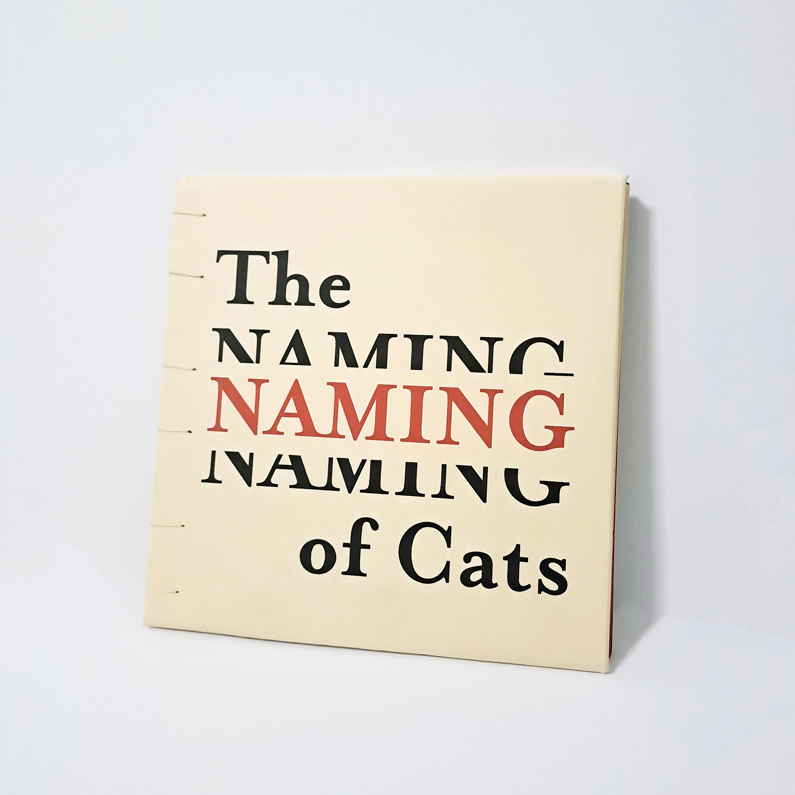
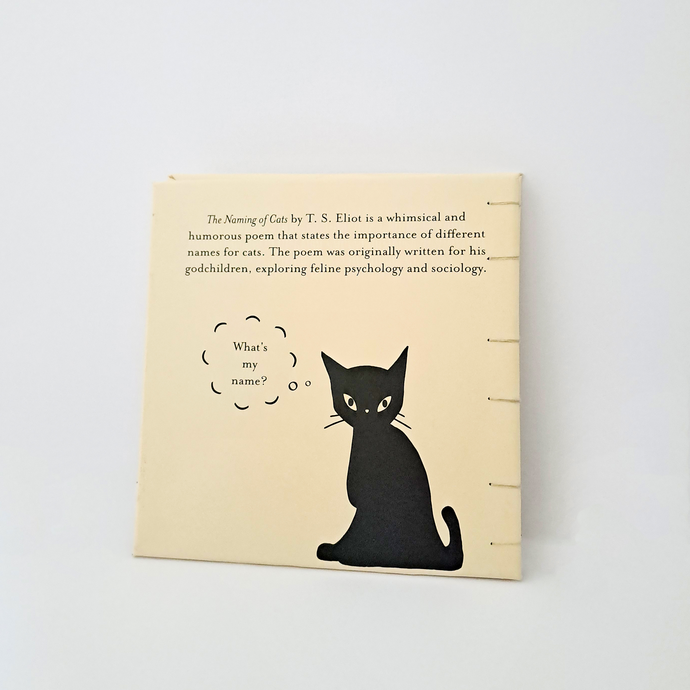
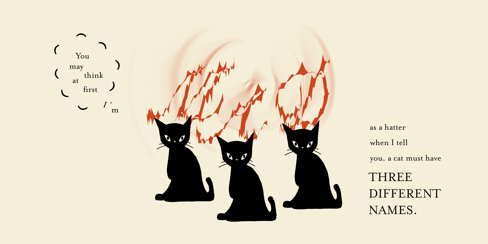
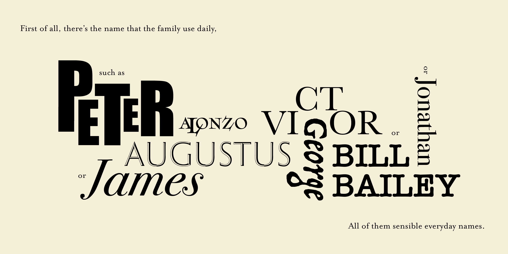
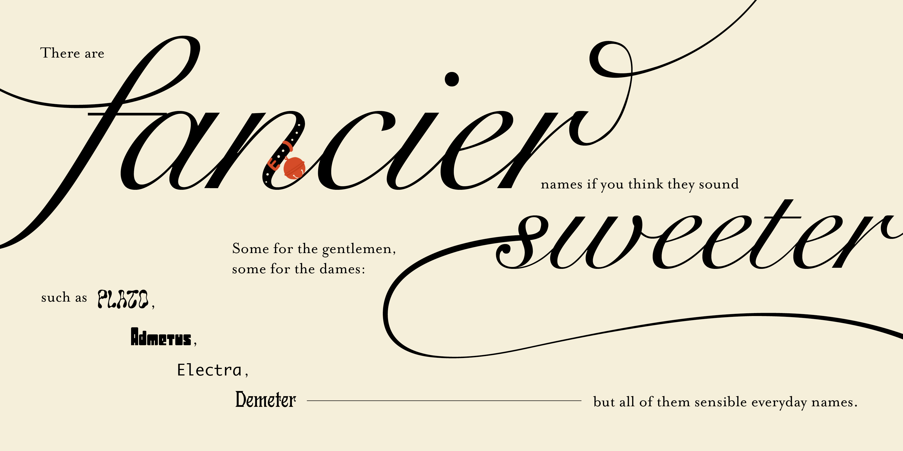
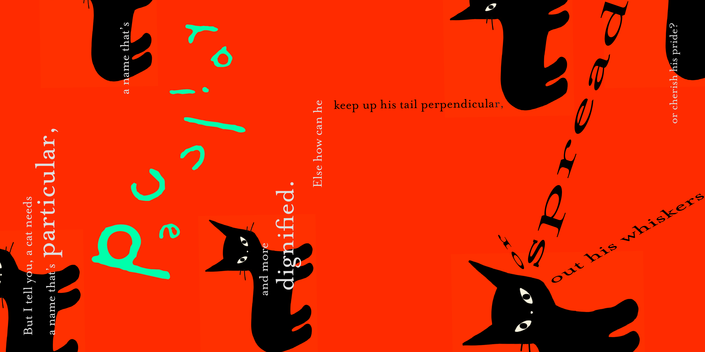
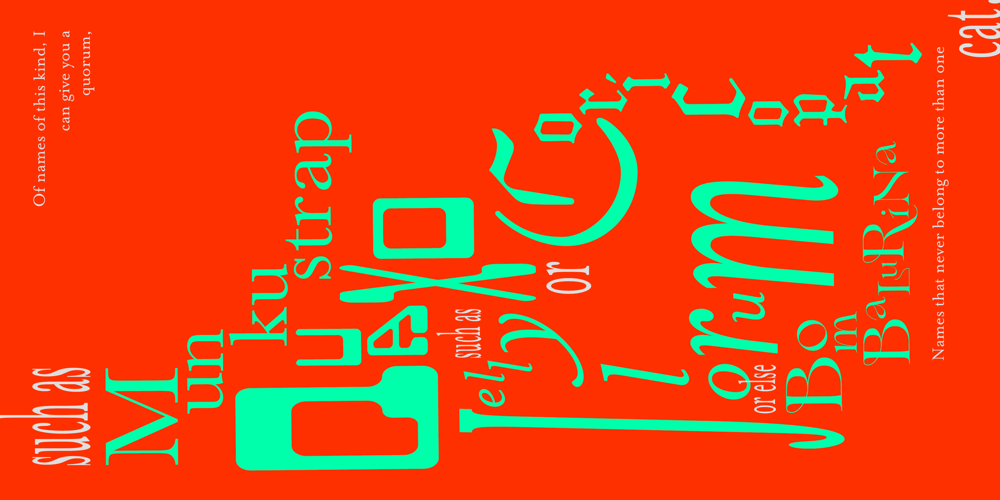
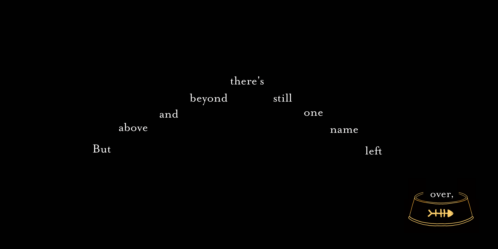
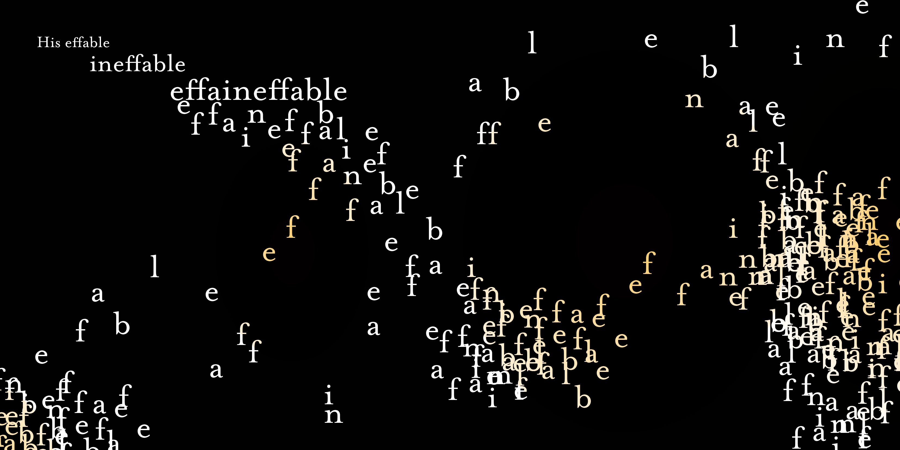

THE APPROACH
Featuring simple illustrations and a square format, the book draws inspiration from children’s books. It reimagines how typography can function within this context, using type as a playful and expressive visual element rather than just a tool for reading. This book is split into 3 sections, each representing a different type of cat name. The typography in each section is designed to reflect the unique characteristics of the names, creating a visually engaging and cohesive narrative throughout the book.







pg 1-4
pg 5-8
pg 9-12
pg 13-16
pg 17-20
pg 21-24
TOOLS
Adobe InDesign
Adobe Illustrator
Adobe Photoshop